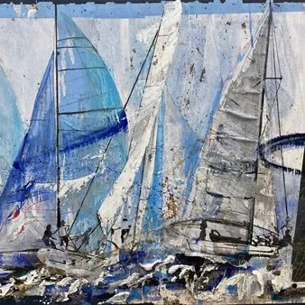

da mer 7 ott a dom 11 ott
Barcolana 58 - Le rotte in libertà
Rotte in Libertà-Trieste è la nuova mostra personale di Ester Maria Negretti, artista comasca affermata nel panorama artistico contemporaneo italiano, che torna a dialogare con il mondo della vela e del mare in occasione della 58ma Edizione della Barcolana, la storica regata…
 Indicazioni
Indicazioni
- Costi e prenotazioni
- Costo non indicato · Prenotazione non indicata
- Programma
- Programma da verificare. Apri la fonte ufficiale per orari e possibili aggiornamenti.
- In caso di maltempo
- Nessuna indicazione specifica pubblicata.
- Note
- Acquisito automaticamente dalla fonte.
L’EVENTO
Descrizione completa
Rotte in Libertà-Trieste è la nuova mostra personale di Ester Maria Negretti, artista comasca affermata nel panorama artistico contemporaneo italiano, che torna a dialogare con il mondo della vela e del mare in occasione della 58ma Edizione della Barcolana, la storica regata velica internazionale che ogni anno anima la città di Trieste. Ester Maria Negretti propone un percorso espositivo emozionante e immersivo, in cui arte, vento e memoria si fondono in un’esperienza sensoriale e simbolica.
La Barcolana non è soltanto una regata. È un momento in cui il vento diventa il linguaggio di un’intera città. Cambiano il mare, le persone, i ritmi, i luoghi. È una trasformazione collettiva che lascia tracce visibili e invisibili, destinate a rimanere anche quando le vele tornano in porto.
Da questa trasformazione nasce la nuova edizione di Rotte in Libertà, il progetto artistico di Ester Maria Negretti che, attraverso la pittura polimaterica, invita a guardare non ciò che il mare mostra, ma ciò che il tempo conserva.
“Ogni viaggio lascia una traccia -afferma l’artista- e Il vento modifica continuamente il mare. L’acqua leviga le superfici. Il tempo trasforma la materia.
È proprio in quel momento che nasce il mio lavoro.
Non raccolgo gli oggetti. Raccolgo le tracce del loro vissuto. La pittura non aggiunge una storia: rende visibile quella che la materia custodisce già”.
“Frammenti di vele, cime, legni, sabbia -aggiunge Franco Rosso, curatore della mostra- pigmenti e materiali consumati dall’acqua entrano nelle opere non come semplici elementi compositivi, ma come testimonianze di esperienze realmente vissute.
Tra questi trovano spazio anche i manifesti strappati dal vento durante la Barcolana. Non interessa l’immagine pubblicitaria che mostrano, ma ciò che rimane dopo il suo passaggio: le stratificazioni della carta, le lacerazioni, le superfici trasformate dagli agenti atmosferici. Sono frammenti che continuano a raccontare il tempo che hanno attraversato”.
“Ogni opera -conclude Ester Maria Negretti- nasce da un gesto di ascolto prima ancora che di pittura. La materia non viene scelta per ciò che è, ma per ciò che ha vissuto.
Il colore non copre quella memoria: la rende nuovamente visibile. Per questo le opere non rappresentano il mare. Ne custodiscono una parte”.
7 – 11 ottobre 2026
Sala Xenia
Trieste – Riva III Novembre 7
Orario: 10.00-12.30 / 14.00-22.00
IL PROGRAMMA
Programma e orari
Appuntamenti raccolti dalle fonti elencate. Dove manca un orario, non è ancora disponibile in questa scheda.
Programma pubblicato
- Dal 2026-10-07 al 2026-10-11
INFORMAZIONI UTILI
Prima di partire
- Controllare la fonte prima di partire.
ORGANIZZAZIONE